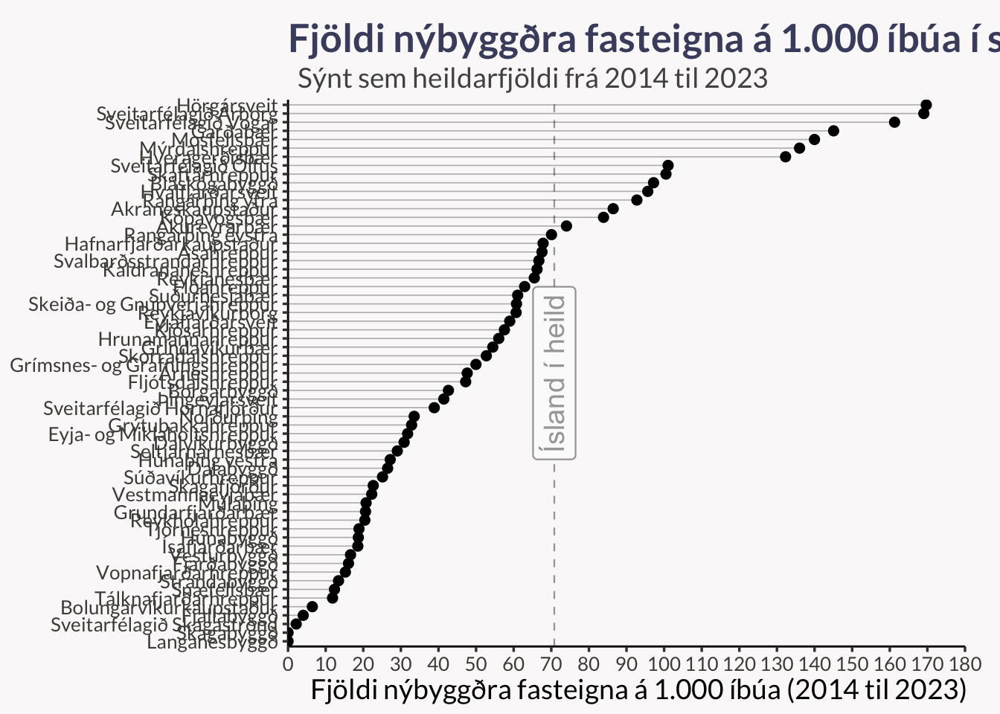
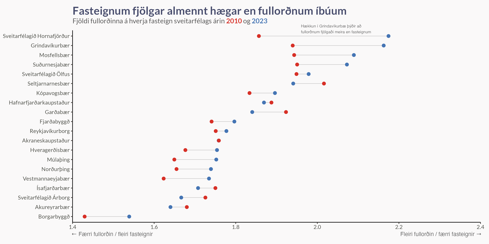
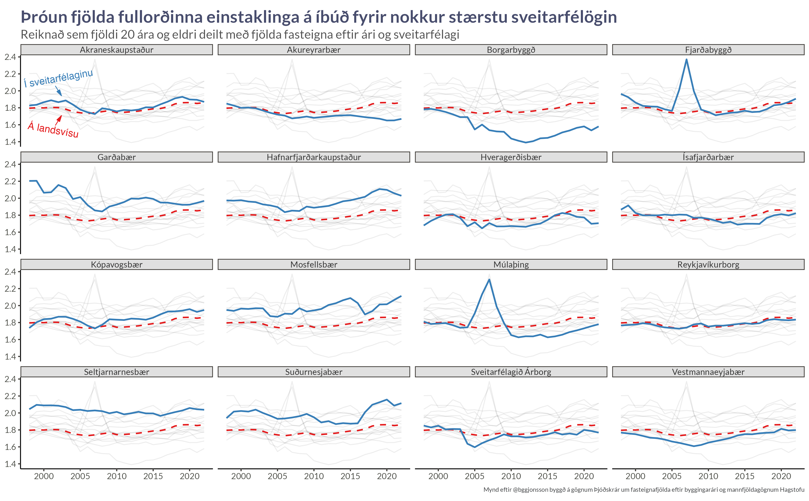
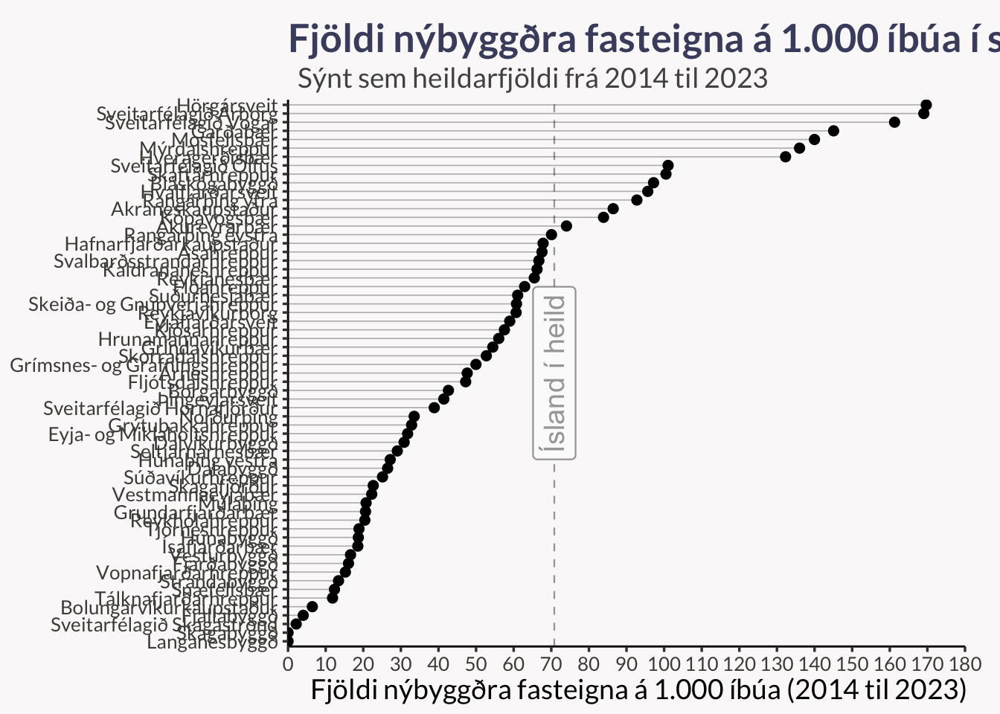
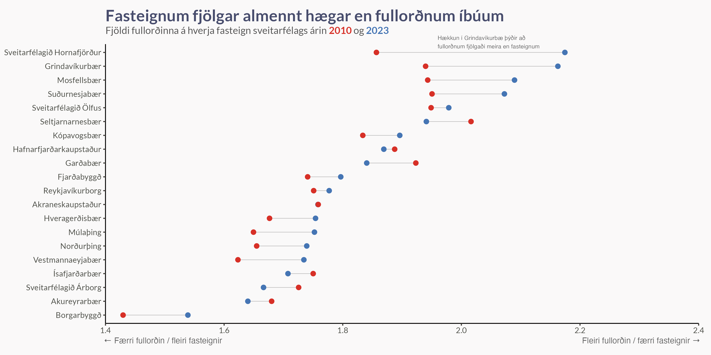
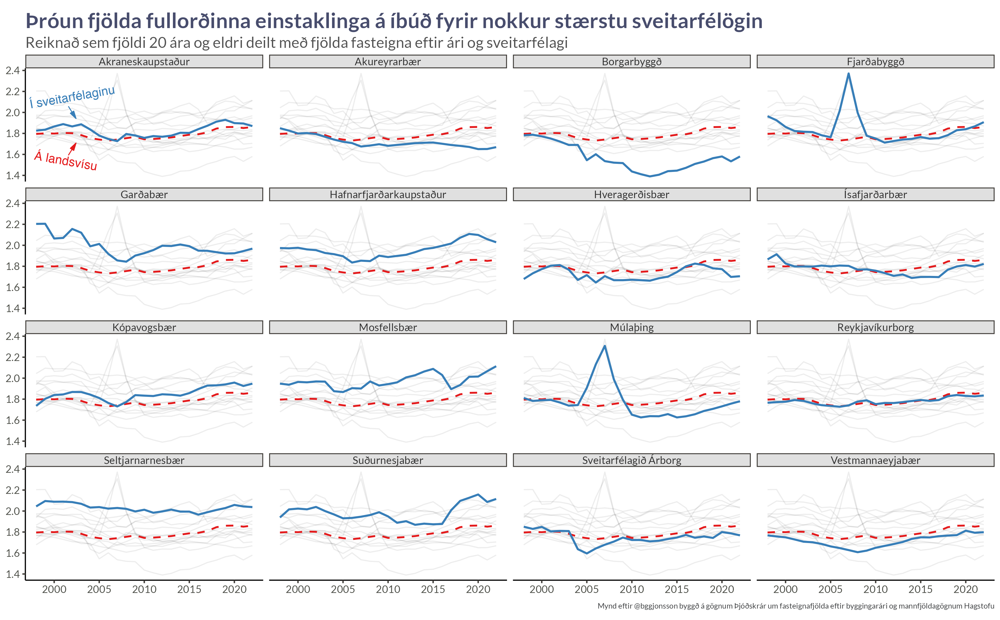

Eftir sveitarfélögum
Samanburður á stöðu og þróun


Hvaða sveitarfélögum gengur vel að byggja nóg af fasteignum?
Oft er talað um uppbyggingu fasteigna í sveitarfélögum landsins. Sum eru sögð standa sig sífellt illa í uppbyggingu og öðrum er hrósað. Hvað segja gögnin um frammistöðu þeirra? Hvaða sveitarfélög byggja mest og hvernig ber það saman við mannfjöldann þar?
January 26, 2023


